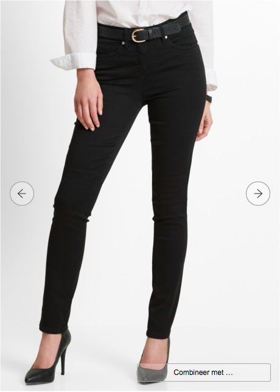
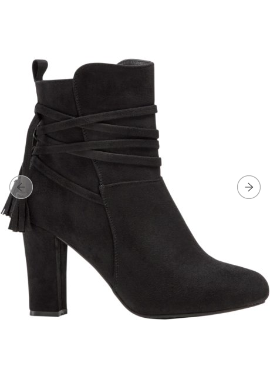
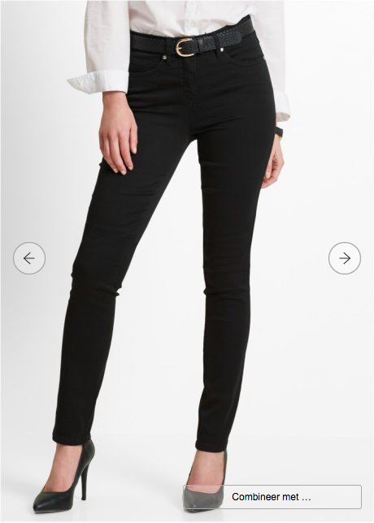
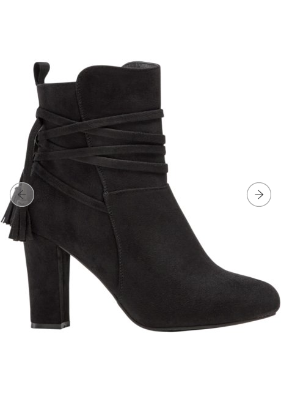

klik op de afbeeldigen voor de reviews
Bonprix Handelsgesellschaft mbH (eigen spellingbonprix Handelsgesellschaft mbH ) is een Duitse modewinkel. De huidige Otto Group- dochter, opgericht in 1986, is gevestigd in Hamburg .
Bonprix heeft ongeveer 3.000 mensen in dienst en voert sinds het einde van de jaren negentig een strategie met meerdere kanalen. Het bedrijf verkoopt een assortiment kleding, huishoudtextiel en klein meubilair en accessoires via drie kanalen, bestaande uit cataloguszaken, e-commerce en filialen . De online shop is het belangrijkste verkoopkanaal van het bedrijf geworden.
Bonprix heeft een kwaliteitscontrole, de zogenaamde Ecotex-standaard. De richtlijnen zijn gebaseerd op de Oeko-Tex Standard 100 . Het bedrijf is ook actief op het gebied van duurzaamheid. Sinds 1991 volgt de onderneming een strategie om uit te breiden naar andere Europese landen. Het bedrijf is vertegenwoordigd in 30 landen.